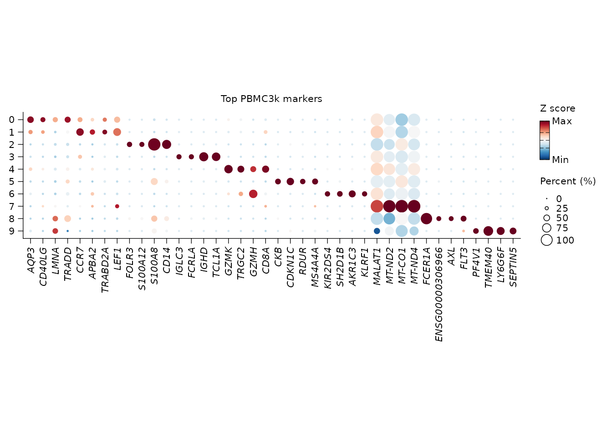
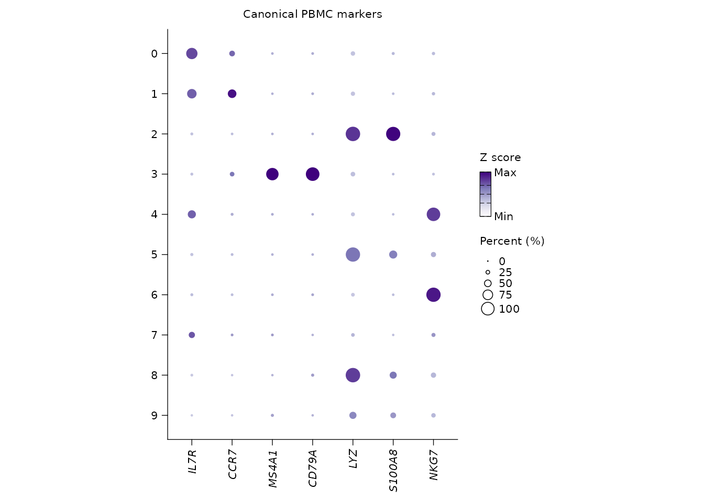

Markers, signatures, pathways, and annotation
Songqi Duan
duan@songqi.org Source:vignettes/annotation-pathways.Rmd
annotation-pathways.RmdAfter clustering, users usually ask three linked questions:
- Which genes define each cluster?
- Which known signatures or pathways explain those genes?
- How can the evidence be reused for plots and annotation?
Shennong stores DE and enrichment results on the Seurat object so the same tables can feed dot plots, interpretation prompts, and later reports.
Cluster PBMC3k and find markers
library(Shennong)
library(Seurat)
library(dplyr)
pbmc <- sn_load_data("pbmc3k")
#> INFO [2026-05-05 20:17:56] Initializing Seurat object for project: pbmc3k.
#> INFO [2026-05-05 20:17:56] Running QC metrics for human.
#> INFO [2026-05-05 20:17:57] Seurat object initialization complete.
pbmc <- sn_run_cluster(
object = pbmc,
normalization_method = "seurat",
nfeatures = 1500,
dims = 1:15,
resolution = 0.6,
species = "human",
verbose = FALSE
)
pbmc <- sn_find_de(
object = pbmc,
analysis = "markers",
group_by = "seurat_clusters",
layer = "data",
min_pct = 0.25,
logfc_threshold = 0.25,
store_name = "cluster_markers",
return_object = TRUE,
verbose = FALSE
)The result is stored under object@misc$de_results.
Retrieve it by name instead of relying on a temporary variable from an
earlier script.
marker_tbl <- sn_get_de_result(
pbmc,
de_name = "cluster_markers",
top_n = 5
)
head(marker_tbl)
#> # A tibble: 6 × 7
#> p_val avg_log2FC pct.1 pct.2 p_val_adj cluster gene
#> <dbl> <dbl> <dbl> <dbl> <dbl> <fct> <chr>
#> 1 6.44e- 89 2.52 0.42 0.083 3.54e-84 0 AQP3
#> 2 2.85e- 60 2.49 0.278 0.049 1.56e-55 0 CD40LG
#> 3 7.42e- 59 2.38 0.295 0.06 4.07e-54 0 LMNA
#> 4 1.08e- 48 1.81 0.371 0.116 5.93e-44 0 TRADD
#> 5 1.28e- 54 1.78 0.381 0.105 7.01e-50 0 TRAT1
#> 6 4.22e-102 2.49 0.512 0.118 2.31e-97 1 CCR7
names(pbmc@misc$de_results)
#> [1] "cluster_markers"Plot stored markers without hand-copying gene lists
Because the DE result is stored, sn_plot_dot() can
select top markers per cluster directly.
sn_plot_dot(
x = pbmc,
features = "top_markers",
de_name = "cluster_markers",
n = 4,
group_by = "seurat_clusters",
palette = "RdBu",
title = "Top PBMC3k markers"
)
For canonical checks, pass marker genes explicitly.
sn_plot_dot(
x = pbmc,
features = c("IL7R", "CCR7", "MS4A1", "CD79A", "LYZ", "S100A8", "NKG7"),
group_by = "seurat_clusters",
palette = "Purples",
direction = 1,
title = "Canonical PBMC markers"
)
Transfer labels from a reference
Marker tables are useful when you want to name clusters manually.
When a trusted reference already exists,
sn_transfer_labels() follows Seurat’s anchor workflow and
writes the projected label plus a confidence score back to the query
metadata. The wrapper keeps the source label and transfer settings in
query@misc$label_transfer, so the annotation is not just a
loose metadata column.
reference <- pbmc
query <- pbmc
reference$cell_type <- reference$seurat_clusters
query <- sn_transfer_labels(
object = query,
reference = reference,
label_by = "cell_type",
prediction_prefix = "pbmc_reference",
dims = 1:15,
verbose = FALSE
)
table(query$pbmc_reference_label)
head(query[[]][, c("pbmc_reference_label", "pbmc_reference_score")])The same query-first interface can use Coralysis reference mapping
when the reference was trained with
sn_run_cluster(integration_method = "coralysis"). For
mapping, keep the Coralysis SingleCellExperiment and PCA model in the
reference by leaving store_sce = TRUE and
return.model = TRUE.
reference <- sn_run_cluster(
reference,
batch = "sample_id",
integration_method = "coralysis",
normalization_method = "seurat",
integration_control = list(
store_sce = TRUE,
pca_args = list(return.model = TRUE)
),
verbose = FALSE
)
query <- sn_transfer_labels(
object = query,
reference = reference,
label_by = "cell_type",
method = "coralysis",
prediction_prefix = "coral_reference",
transfer_control = list(k.nn = 10),
verbose = FALSE
)Discover and manage bundled signatures
Shennong ships a signature catalog so blocking genes, marker sets, and report features do not need to be redefined in every analysis.
signature_index <- sn_list_signatures(species = "human")
head(signature_index)
#> # A tibble: 6 × 5
#> species path name kind n_genes
#> <chr> <chr> <chr> <chr> <int>
#> 1 human Blocklists/Pseudogenes Pseudogenes signature 12600
#> 2 human Blocklists/Non-coding Non-coding signature 7783
#> 3 human Programs/HeatShock HeatShock signature 97
#> 4 human Programs/cellCycle.G1S cellCycle.G1S signature 42
#> 5 human Programs/cellCycle.G2M cellCycle.G2M signature 52
#> 6 human Programs/IFN IFN signature 107
immune_signatures <- sn_get_signatures(
species = "human",
category = c("mito", "ribo")
)
head(immune_signatures)
#> [1] "MT-ATP6" "MT-ATP8" "MT-CO1" "MT-CO2" "MT-CO3" "MT-CYB"Custom signatures can be added, renamed, and deleted through the same API. Use a project-specific catalog path when you do not want to modify the package-level catalog.
catalog_path <- "config/signatures/pbmc_signatures.csv"
sn_add_signature(
species = "human",
path = "custom/t_cell_activation",
genes = c("IL7R", "CCR7", "LTB"),
catalog_path = catalog_path,
source = "project"
)
sn_update_signature(
species = "human",
path = "custom/t_cell_activation",
rename_to = "custom/naive_t_cell",
catalog_path = catalog_path
)
sn_delete_signature(
species = "human",
path = "custom/naive_t_cell",
catalog_path = catalog_path
)Run enrichment from stored marker results
sn_enrich() can accept a gene vector, a ranked vector, a
data frame, or a Seurat object with stored DE results. For cluster
markers, the Seurat-object path is the most reproducible because the
enrichment knows which DE result it came from.
pbmc <- sn_enrich(
x = pbmc,
source_de_name = "cluster_markers",
species = "human",
database = "GOBP",
store_name = "cluster_gobp",
return_object = TRUE
)
#> INFO [2026-05-05 20:19:03] Running ORA analysis for the GOBP database.
pathways <- sn_get_enrichment_result(
pbmc,
enrichment_name = "cluster_gobp",
top_n = 5
)
head(pathways)
#> # A tibble: 5 × 12
#> ID Description GeneRatio BgRatio RichFactor FoldEnrichment zScore
#> <chr> <chr> <chr> <chr> <dbl> <dbl> <dbl>
#> 1 GO:00… regulation… 159/2481 453/18… 0.351 2.67 14.0
#> 2 GO:19… mononuclea… 152/2481 439/18… 0.346 2.63 13.5
#> 3 GO:00… generation… 147/2481 438/18… 0.336 2.55 12.8
#> 4 GO:00… regulation… 146/2481 472/18… 0.309 2.35 11.6
#> 5 GO:00… nucleotide… 146/2481 478/18… 0.305 2.32 11.4
#> # ℹ 5 more variables: pvalue <dbl>, p.adjust <dbl>, qvalue <dbl>,
#> # geneID <chr>, Count <int>If you already have an enrichment table from another tool, store it
with sn_store_enrichment() so the interpretation layer can
find it.
external_terms <- data.frame(
cluster = "0",
ID = "GO:0006955",
Description = "immune response",
p.adjust = 0.001,
geneID = "IL7R/CCR7/LTB"
)
pbmc <- sn_store_enrichment(
object = pbmc,
result = external_terms,
store_name = "external_gobp",
analysis = "ora",
database = "GOBP",
species = "human",
source_de_name = "cluster_markers",
return_object = TRUE
)Cell communication and regulatory activity
Cell communication should be run through a real backend rather than
an ad hoc ligand-receptor table.
sn_run_cell_communication() keeps the same stored-result
pattern used by DE and enrichment. Use CellChat for a global interaction
network, NicheNet when the question is sender-to-receiver ligand
activity, or LIANA when the optional LIANA package is available and
consensus scoring is preferred.
pbmc <- sn_run_cell_communication(
object = pbmc,
method = "cellchat",
group_by = "seurat_clusters",
species = "human",
store_name = "cluster_cellchat"
)
cellchat_tbl <- sn_get_cell_communication_result(
pbmc,
communication_name = "cluster_cellchat"
)
head(cellchat_tbl)NicheNet needs its ligand-target matrix and ligand-receptor network. Shennong requires those priors explicitly so the output remains traceable to the real NicheNet model rather than an inferred placeholder network.
pbmc <- sn_run_cell_communication(
object = pbmc,
method = "nichenetr",
group_by = "seurat_clusters",
sender = c("0", "1"),
receiver = "2",
geneset = c("IL7R", "CCR7", "LTB"),
ligand_target_matrix = ligand_target_matrix,
lr_network = lr_network,
store_name = "sender_receiver_nichenet"
)For transcription-factor and pathway activity,
sn_run_regulatory_activity() uses fast footprint methods
through decoupleR. DoRothEA reports TF activity; PROGENy
reports pathway activity.
pbmc <- sn_run_regulatory_activity(
object = pbmc,
method = "dorothea",
group_by = "seurat_clusters",
species = "human",
store_name = "cluster_dorothea"
)
tf_activity <- sn_get_regulatory_activity_result(
pbmc,
activity_name = "cluster_dorothea",
sources = c("NFKB1", "STAT1")
)
head(tf_activity)Optional reference annotation with CellTypist
CellTypist is a Python command-line tool, so Shennong keeps it explicit. When the input is a Seurat object, predictions are written back to metadata. When the input is a file path, Shennong returns the prediction table because there is no object to update.
pbmc <- sn_run_celltypist(
x = pbmc,
model = "Immune_All_Low.pkl",
over_clustering = "seurat_clusters",
majority_voting = TRUE,
quiet = TRUE
)
grep("Immune_All_Low", colnames(pbmc[[]]), value = TRUE)
prediction_tbl <- sn_run_celltypist(
x = "pbmc3k_counts.csv",
model = "Immune_All_Low.pkl",
over_clustering = "obs_cluster",
quiet = TRUE
)
head(prediction_tbl)The intended pattern is evidence first, label second: markers and pathways are computed and stored before automated or LLM-assisted annotation consumes them.